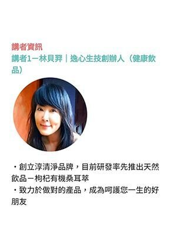
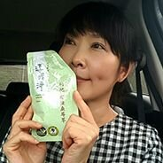
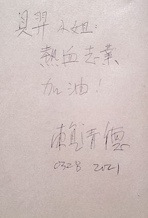
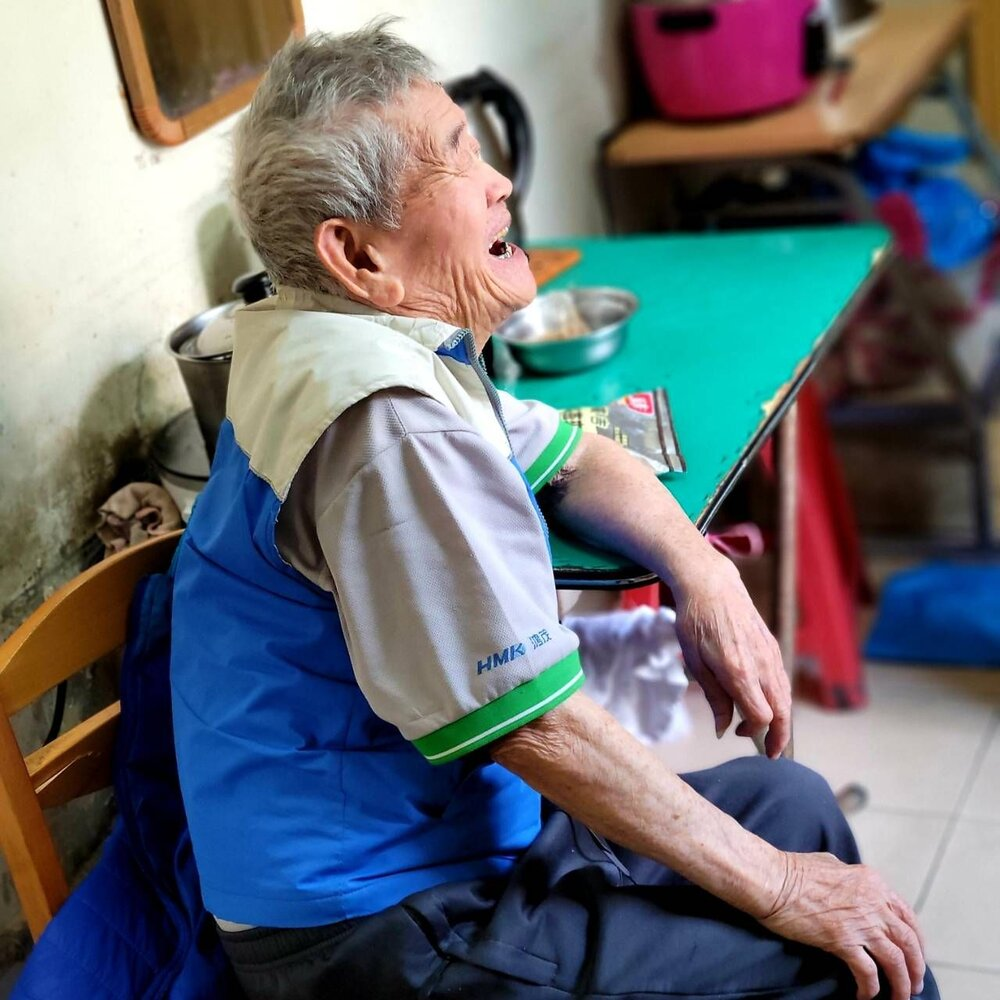
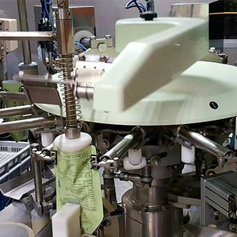

一
二十一年的螢光幕後
她在電視台待了二十一年。新聞的節奏是不等人的，機器一開就沒有暫停鍵，長期的工作壓力加上日夜顛倒的作息，讓身體先發出了警告：膽固醇超標、精神差、便祕、手麻、膝蓋退化，大小病痛沒有停過。那是一段用健康去換專業的日子，她很清楚自己在換什麼，卻沒有辦法停下來。
01卷首
逸心生技創辦人 ｜ 「淳清淨」品牌主理人 ｜ 21 年資深媒體人
「以絕對負責的態度，做對的產品，成就善良的人生。」

02嘉勉

「貝羿小姐，熱血志業，加油！」
— 賴清德副總統 親筆嘉勉．2021.03.28 總統府
2021 年 3 月 28 日，她帶著先生與孩子走進總統府南苑，參與「歲末年歡・親親寶貝同樂會」，佈展、捐款，並捐贈 1900 包「淳清淨」給到場的身心障礙孩童。當天，她獲頒「慈善家」獎牌。
03生命故事
從螢光幕後，到把健康喝回來

一
她在電視台待了二十一年。新聞的節奏是不等人的，機器一開就沒有暫停鍵，長期的工作壓力加上日夜顛倒的作息，讓身體先發出了警告：膽固醇超標、精神差、便祕、手麻、膝蓋退化，大小病痛沒有停過。那是一段用健康去換專業的日子，她很清楚自己在換什麼，卻沒有辦法停下來。

二
真正讓她停下來的，是家裡的事。公公因癌症離世，而她自己曾經突然支氣管痙攣、無法呼吸——那個面對死亡的恐懼，是一輩子都不會忘記的。
她說。人到了那個當口，會突然看清楚什麼是重要的。她辭去了電視台的工作，離開熟悉的舒適圈，開始一頭栽進自然食材與菌叢生態的研究裡。

三
她從原型食材下手，選埔里有機黑木耳、有機枸杞，結合傳統製法與破壁技術，做出「淳清淨 枸杞有機桑耳萃」。產品取得有機認證，並自主送 SGS 檢驗，未檢出農藥殘留與重金屬。她自己先把健康喝了回來，然後許下一個志願：不只要活得健康，還要幫助更多人好好活著。從那天起，她的公司和她的公益，就沒有分開過。
04發心
她信奉觀世音菩薩。觀音的願，是聞聲救苦——聽見了，就走過去。這四個字幾乎可以拿來解釋她這幾年做的每一件事。
所以她探訪獨居長輩時不急著送東西，先坐下來聽；所以她會為了一個護理長在群組裡的一句話，當天決定捐出三千包；所以女兒第一次擺攤義賣、第一次包粽送給弱勢族群，她讓孩子自己去經歷，而不是替孩子做完。善不是一次性的施捨，是日常裡一個接一個的選擇。
她常說：真正的付出，不是分享多餘，而是願意割捨原本擁有的。
也說：付出及共善，最終都會回到自己身上。
這份發心，最後長成了一間公司的樣子——以絕對負責的態度，做對的產品，成就善良的人生。做對的產品是本分，成就善良的人生才是願。
05歷史足跡
2018 → 2021，54 幀有紀錄的日子
善不是一次性的施捨，是日常裡一個接一個的選擇。這面牆上的每一幀，都有日期、有名字、有一件真的做過的事。
照片與說明整理自「淳清淨」官方網站公開紀錄（2018–2021）。
06榮譽與認證
別人給的肯定，與自己送去檢驗的底氣
貝羿小姐，熱血志業，加油！
投保金額不等同於理賠金額。
08宏光分會
二十一年的媒體訓練，讓她習慣先聽懂別人的故事，再決定怎麼說。這正是引薦最需要的能力——聽見對方真正的需要，再把對的人帶到對的人面前。
健康飲品與自然食材（益生質・菌叢生態）、品牌與產品開發、通路與企業贈禮。
21 年電視台媒體歷練——採訪、企劃、簡報、公關溝通、活動執行與媒體曝光。
診所與健康通路、企業福委與採購、公益團體與社福單位、生技與食品同業、想把品牌說清楚的創業者。
BNI 桃園西區・宏光分會
09結語與聯絡
「真正的付出，不是分享多餘，而是願意割捨原本擁有。」
本頁內容整理自公開報導與「淳清淨」官方網站公開資訊。
本網頁使用 TAVI AI 製作
執行人：大樹教練